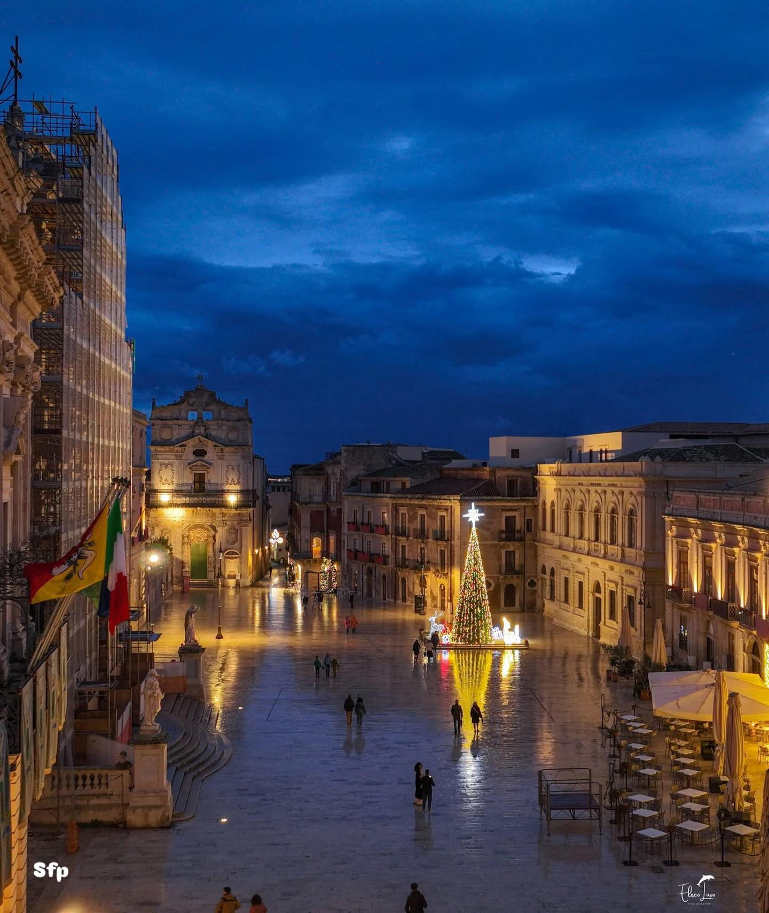

Informazioni
Piazza Duomo è il cuore elegante di Ortigia, una delle piazze barocche più suggestive d’Italia. La sua forma allungata, le facciate chiare degli edifici e la presenza imponente della Cattedrale di Santa Lucia creano un’atmosfera luminosa e scenografica. Circondata da palazzi storici, chiese e caffè, è uno dei luoghi più amati dai visitatori per la sua armonia architettonica e per la luce che cambia durante il giorno, rendendola perfetta per passeggiare e ammirare il patrimonio siracusano.

Attività
• Eventi culturali e spettacoli: la piazza ospita spesso concerti, rappresentazioni teatrali
e iniziative estive legate alla valorizzazione del centro storico.
• Visite alla Cattedrale: uno dei monumenti più importanti della città, costruito inglobando l’antico tempio dorico
di Atena.
• Passeggiate e fotografia: la piazza è uno dei luoghi più fotografati di Ortigia,
soprattutto al tramonto.
• Feste religiose: durante le celebrazioni dedicate a Santa Lucia, la piazza diventa il fulcro delle processioni e dei momenti di devozione.
• Caffè e vita serale: i locali che si affacciano sulla piazza la rendono un punto ideale per godersi
l’atmosfera serale di Ortigia.